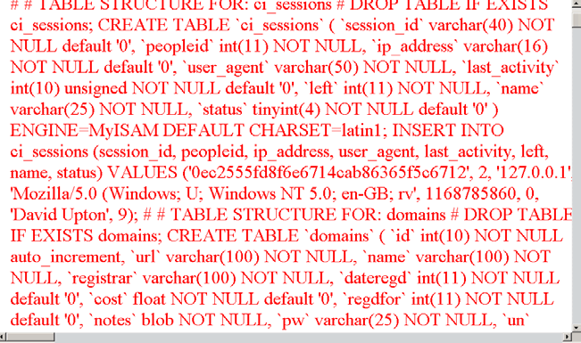
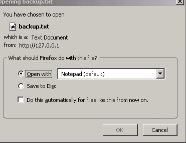
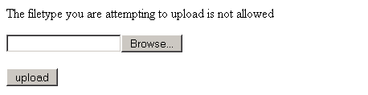
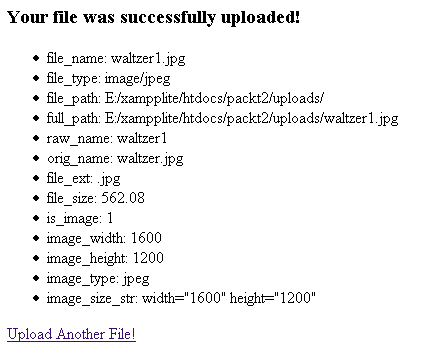

第十一章 使用 CI 处理文件和图片
本章看几个有用的 CI 功能和辅助函数。他们中的每一个都是如何用几行 CI 代码无逢存取一系列应用和动作的好例子，如果从头开始编码的话你需要具备许多专业知识。在许多情况下，CI 提供一个对已有类的简单接口，这些类可能是你从 PEAR 或者其他源代码中提取的。但 CI 给你一个标准接口：你只需把它作为本地 CI 代码，并且框架向你提供所有接口的内容。
让我们看看本章中的五个内容：
- 文件辅助函数让我们很容易的读写文件。
- 下载辅助函数让用户直接下载你网站上的文件，而不是显示他们为 HTML。
- 文件上传类以其他方式工作，他允许用户存储文件到你的网站，并有内建的安全措施以限制用户的行为。
- 图像处理类允许你给图片做几个有用的处理，我们将看看如何调整图片的大小和给图片加水印。
- 最后，Zip 类允许你的用户下载文件之前压缩它。
这里的每一个例子都暗藏着许多聪明的代码实现，并且允许你以最小的代价写出实际的应用。在很多例子中，增加了一些额外的代码以使其更健壮。
让我们一个接一个的看看：
11.1 文件辅助函数
第一次学习 PHP 的读写文件的语法是不容易掌握的。CI 的文件辅助函数包含许多有用的函数，他封装了 PHP 自己的文件处理操作。开始一如既往的装载这个辅助函数：

$this->load->helper('file');
然后生活得到了很多简化。例如，写文件，你需要知道的是：
- 你的文件的位置。
- 你想写入的文本。
- 你想以什么模式打开文件。模式定义在 PHP 手册中（看“fopen”这页）。它们包含“r”为读，“w”为写（写入文件，覆盖已存在的数据），“a”为追加（写入文件，在已存在的数据后添加）。每种情况下，添加一个“+”，例如“a+”，打开文件以进行读写操作。“a”和“w”，而不是“r”或“r+”，如果没有的话，总是创建文件。
然后你使用这三个信息作为 write_file() 函数的参数：
write_file('e:/filetest.txt', 'hello world', 'a+');
这比 PHP 的两步代码更简单、更直观：
其次，CI 代码添加了一点额外功能：它在写入之前自动锁定文件，写入后再解锁。如果没有发生文件操作，则辅助函数返回“FALSE”，所以你可以用它来报告成功或失败。你需要为你的文件指定一个文件名，但如果你不指定文件路径，它将保存在你站点的 web 根目录下，就是你的主 index.php 文件所在的位置。
当然，在任何文件夹中你创建或写入文件必须具有写入权限。记住，如果你运行于一个 Windows 系统，你必须使用正斜杠 ― /― 来描述你的文件路径。
在我们的应用程序中，我们可以把数据库工具类与这个辅助函数组合起来。这允许我们创建、备份、修复和优化数据库和表，虽然只适用于 MySQL 和 MySQLi 数据库。与文件辅助函数一起使用，你就可以创建一个不错的备份例程。
$this->load->dbutil(); $backup =& $this->dbutil->backup(); $this->load->helper('file'); write_file('e:/mybackup.gz', $backup);
上面的代码将保存服务器上的最新版本的数据库到文件。
再次读取文件同样简单：
$content = read_file('e:/filetest.txt');
还有个功能是，返回指定目录中的所有文件和文件夹，并以数组形式表示：
$filenames = get_filenames('e:/');
不过，如果你在有很多文件的文件夹中使用它的话，你可能会发现 PHP 在把目录读取完毕前就超时了。你可以使用这个简单的代码片段，来检查你想要的文件或文件夹是否存在。首先，使用 CI 的函数查找文件，并定义一个要查找文件的数组，然后使用 array_diff() 比较它们。给出两个数组，array_diff() 告诉你在第一个数组中，但不在任何其它数组中的值，所以，你需要两次调用它，把每个数组都放在前面。
//list files actually found $files_there = get_filenames('e:/rootfolder/system/application/controllers'); // list files we expected $files_expected = array('start.php', 'index.php'); // any found that we didn't expect? $difference = array_diff($files_there, $files_expected); echo "<br />Missing files are:"; print_r($difference); // any expected that we didn't find? $difference = array_diff($files_expected, $files_there); echo "<br />Extra files are:"; print_r($difference);
最后，有个比较“恐怖”的函数 - delete_files()。删除指定目录里的所有文件：
delete_files('c:/mydirectory/');
将删除“mydirectory”中的所有内容。如果你添加可选参数为“TRUE”：
delete_files('c:/mydirectory/', TRUE);
这同时会删除目录下的所有子文件夹，多加小心。想象下面发生什么？
delete_files("c:/", TRUE);
要不你试试？！
11.2 下载辅助函数
下载辅助函数库里只有一个函数，但他是文件辅助函数很好的补充。你可能创建了个文件，而希望将之以文本文件的方式展现给访问者，而非一个网页。
一个很好的例子是一个数据库备份文件，就像我们刚刚创建的那段代码。
为了在数据库崩溃的时候重建它，我们需要一个 MySQL 格式的文本文件。屏幕上的东西对我们来说没多大用处：

我们需要找到一种下载文件的方式。换句话说，在 Windows 系统中，我们想看到这个对话框：

为了在 Internet 连接下编码这些内容，你必须在 HTTP 头中指定页面类型。CI 的下载辅助函数帮助你在后台完成这些事情。装载辅助函数：
$this->load->helper('download');
像下面这样使用其唯一的方法：
force_download($name, $data);
$name 是被下载文件的名字，$data 是文件的内容。如果你想下载已存在的文件，那么你需要先把它读到字符串中：
$data = file_get_contents("e:/mybackup.txt"); $name = 'backup.txt'; force_download($name, $data);
文件的内容可以直接重建 MySQL 数据库。你也可以使用这个辅助函数直接下载报告，无需强迫用户把他们从屏幕上摘抄下来。
在幕后，辅助函数帮助识别 MIME 类型并设置 HTTP 头。他依赖于其中的“配置”文件，system/application/config/mimes，下一节将看到上传类也使用它。这个配置文件存储 MIME 类型和对应 HTTP 扩展名的数组―例如：
'rtf' => 'text/rtf', 'text' => 'text/plain',
这个方法能节省你去记忆他们的时间！
如果你经常使用的文件类型没有包括在 CI 的列表中，那么你可以很容易的将它们添加到“配置”文件中。
11.3 文件上传类
有时候，你想允许用户在你的网站里上传文件。这些可能是文本、图像或更多其他文件类型，如 MP3 音频或 MPEG 视频。这是一个比我们刚刚讨论过的文件下载更复杂的过程，但 CI 的文件上传类可以帮你完成大多数的工作。它也能处理一些安全问题。不过，你应该总是三思而后行允许任何人上传文件到你的网站，你可能想要保护上传页面，以防止未经授权的用户上传。
首先，您需要在服务器上分配空间（文件夹），以存放上传的文件。这个文件夹必须已设置了正确的权限，以允许用户写入。（例如 Unix/Linux 系统上的 777）。让我们假设你新建一个名为“uploads”的文件夹，并将它放在 WEB 根目录文件夹中。
装载 CI 的文件上传类：
$this->load->library('upload');
然后你需要做三件事情：
- 设置默认值
- 创建一个控制器来处理上传。
- 给你的用户提供一个上传表单和“成功”表单。
让我们按这个顺序设置他们。首先，设置一系列默认值。创建一个 $config 数组以完成这件事。
让我们将你刚创建的目录设置为上传目录。这样写：
$config['upload_path'] = 'uploads';
这行代码可以写在控制器中，也可以在 config 文件夹中创建一个包含这行代码的 upload.php 文件。（system/application/config/upload.php）。
<?php if (!defined('BASEPATH')) exit('No direct script access allowed'); $config['upload_path'] = 'uploads'; ?>
理解这两种设置默认值方式之间的区别很重要。如果你在 config/upload.php 文件中设置了默认值，你就不需要专门进行初始化文件上传类的工作。只要装载他，他自己就能找到默认值。
但是，你可以在加载类的时候在第二个参数中指定该控制器的默认值，像这样：
$this->load->library('upload', $config);
$config 是默认值数组的名字。（不要试图在 config/upload.php 文件和控制器里设置默认值！）
这种处理方式显得不够优雅，所以 CI 推荐使用更合理的方式组织配置文件。下面是几个要点：
- 上传文件的位置：CI 不做任何假设，你必须告诉他。
- 允许用户上传的文件类型。像这样设置：
使用管道操作符（|）分隔允许的文件类型。上面的设置将允许在你的网站里上传大多数的图像类型的文件，但他将不允许上传音频文件。设置这个参数是一个基本的安全措施：如果你只想让用户上传图片，而不允许上传可执行文件或大型 MP3 文件。PHP 代码
$config['allowed_types'] = 'gif|jpg|png';
注意：你必须在允许上传文件之前设置一个值：默认设置（例如：不设置）不允许上传任何文件。 - Max_size：如果你不想恶意用户填满你所有的空间，那就明确的设置可上传文件的最大文件大小（KB）。默认值是 0，表示没有限制。
- 覆盖：如果用户正在上传的文件，和上传文件夹里的文件同名的话，旧文件将被覆盖并永远丢失吗？这取决于网站的实现和允许用户上传的原因。CI 的默认值是“FALSE”, 意思是不覆盖旧文件，并用一个新名字保存文件。如果你想新文件覆盖旧文件，就明确设置这个默认值为“TRUE”。
注意：CI 不会自动通知用户他或她的文件已被重命名，所以可能会让用户产生困惑：阅读下面的内容，来学习如何取得上传过程的报告。 - 你还可以设置图片尺寸，宽和高的默认值；加密文件；清理标题上的空白。
现在你已经确定默认设置了，接下来你需要一个上传控制器。这非常简单。他的作用是初始化上传类、从用户表单接收上传，然后确定上传是否成功。如果成功则显示一个报告；如果失败则返回一个带错误信息的上传表单。非常简单，他只包括一个方法：do_upload()，像这样：
<?php /*constructor function to initialize controller and load the file upload class, plus the two other helpers it needs */ class Upload extends Controller { function Upload() { parent::Controller(); $this->load->helper(array('form', 'url')); $this->load->library('upload'); } /*now the function which does all the work!*/ function do_upload() { if ( ! $this->upload->do_upload()) { $error = array('error' => $this->upload->display_errors()); $this->load->view('upload_form', $error); } else { $data = array('upload_data' => $this->upload->data()); $this->load->view('upload_success', $data); } } }
此功能需要一个 upload_form 视图和 upload_success 视图。先使用表单辅助函数创建一个表单，并指向“upload”控制器的 do_upload 方法：不要用下面的函数“打开”：
（第五章里介绍的表单“打开”方式），而是用表单辅助函数的 multipart 函数“打开”：
（记住：我们是在用代码来产生 HTML 标签，所以需要显示到屏幕上。）
然后，使用表单辅助函数的 form_upload 函数替换 form_input：
这两行代码可以帮你完成很多乏味的工作。
添加一个提交按钮，并“关闭”表单。
传递 $view 变量到视图并装载他。当 do_upload 函数传递 $error 到视图中时，你的视图也应该显示 $error 变量。
你现在看到的页面应该是这样的：
单击“浏览”查看用户电脑上的文件（本地），而不是服务器上的。一旦他（她）选择了一个文件并单击上传按钮，将调用上传控制器，然后文件将被传输到服务器上的上传文件夹中。
当我们尝试上传一个文本文件时，（记住，我们只允许“gif | jpg | png”文件类型。）我们将看到：

CI 返回一个类型错误：这是控制器中的 $this->upload->display_errors() 方法在起作用，他在视图中添加了一个错误消息变量。
你也可以让 CI 报告上传已成功。正如你看到的，如果上传成功，控制器就装载一个名为 upload_success 的视图。$this->upload->data 方法的内容将被传递到这个视图中。他返回上传过程的所有信息的数组：可能多于你想要显示的信息。
我上传一个名为 waltzer.jpg 的文件：默认报告看起来是这样的：

如果你想创建一个像 Flickr 那样的站点的话，那这些信息可能会影响用户上传他们的图片！然而，你可以很容易的去掉上传控制器中你不需要的任何信息。
请注意，顺便说一下，在写这个例子的时候，我设置文件上传类的“overwrite”值为“FALSE”，然后上传了两次 waltzer.jpg 文件。
上面的截图显示的是 CI 关于第二次上传成功的报告。你将看到文件已被重命名为 waltzer1.jpg。如果查看上传文件夹，你就会看到两个文件，一个是原来的 waltzer.jpg 文件，另一个是新的 waltzer1.jpg 文件。在你的应用里，你可能想比较 raw_name 和 orig_name 的值，并告诉用户文件名已被更改。
CI 不比较两个文件的内容，只比较文件名。如果你允许多人上传文件，那么，其中的两个人，将很有可能在无意中，使用相同的文件名来上传不同的文件，并且，你可能不希望丢失第一个文件。另一方面，如果你通过网站上传名字总是相同的文件，你也许宁愿只在网站上保存最新的文件，在这种情况下，覆盖文件是一个简单的节省空间的方法。
顺便说一下这个图片，我们将在下一节用到它。
11.4 CI 的图像类
如果你允许用户上传图片，你还需要看看 CI 的图像处理类。他支持 PHP 最流行的三个图像类库：GD/GD2、NetPBM 和 ImageMagick。（使用 phpinfo() 查看你的服务器是否支持这些类库。）虽然图像水印效果只支持 GD/GD2：
图像处理类允许你完成图像的 4 个基本功能：
- 缩放：在你的屏幕上，你可能想把它们的大小设置为标准尺寸;或者你想设置成“缩略图”的大小。
- 裁剪
- 旋转
- 水印（只可用在 GD/GD2）：它经常用于在图片上放置版权标志，这样可以防止别人从你的网站上下载图片，然后占为己有，当作他们自己的原创作品。
这些功能中最有用的可能就是缩放了，那么一会儿我们来详细看看吧。裁剪和旋转用处不大，除非你能在屏幕上看到图片。要做到这一点，你需要某种形式的用户界面，使用户可以指定她或他想做的事，并控制 CI 实现这些功能，并且，你需要自己编写这些功能代码！
让我们假设你已经使用刚才讨论过的文件上传类，上传了 wltzer.jpg 图片到 /uploads 文件夹中。（上传和处理图片需要设置这个文件夹的权限为 777，因为 CI 需要保存处理结果到这个文件夹中。）
首先, 装载类库：
$this->load->library('image_lib');
然后，你需要设置几个配置信息。（与文件上传类一样，你可以写在代码里，也可以放到单独的 system/application/config/image_lib.php 文件中。）
这里有一些配置，并且他们已列在《用户指南》里了。或许最重要的是：
- 选择你使用的图像库。默认是 GD2，所以，如果你的 PHP 安装的不是这个库的话，你需要指定一个，例如，$config['image_library'] = 'ImageMagick';（你也应该提供 ImageMagick 库的路径：$config['library_path'] = '/mypath';）
- 你要处理的图片。应该提供路径（相对于网站根目录）和文件名。
- 处理后图片的尺寸―“x”表示像素数，设置宽度：$config['width'] = x;，设置高度 $config['height'] = x;。
要调整图片尺寸，只这些还不够，需要用已调整尺寸的图片覆盖旧图片文件。代码如下：
function do_image($image_name) { $this->load->library('image_lib'); $config['image_library'] = 'GD2'; $config['source_image'] = "$image_name"; $config['width'] = 140; $config['height'] = 104; $this->image_lib->initialize($config); if(!$this->image_lib->resize()) {echo "failed";} else{echo 'success!';} }
这个库可以做其他一些聪明的事情。如果你不想覆盖原始图片，可以为新版本指定新名称和文件路径，添加：
$config['new_image'] = 'newfolder/newname.png';
或者，如果你想创建一个图片的缩略图，简单地添加：
$config['create_thumb'] = TRUE;
执行的效果是：用默认的后缀（_thumb）重命名新调整的文件，把 waltzer.jpg 改成 waltzer_thumb.jpg。(你可以很容易的修改后缀--参考《用户指南》。) 所以，现在有两个文件在同一个文件夹中：原图和缩略图。
注意：缩略图设置什么也不做，你还是需要设置你想要的尺寸。
这个图片被缩小到 140x104 像素：
图像类的附加功能可以给你的图片加水印。所以，如果你把自己的精彩照片放到网站上，你也可以添加一个版权声明。
虽然添加水印功能有很多选项，在《用户指南》里有详细说明，但基本的代码很简单。初始化类，告诉它想要加水印的图片和水印的内容，然后调用 watermark 方法。
function wm_image() { $this->load->library('image_lib'); $config['source_image'] = 'uploads/waltzer.jpg'; $config['wm_text'] = 'Copyright 2007 - David Upton'; $config['wm_type'] = 'text'; $this->image_lib->initialize($config); if(!$this->image_lib->watermark()) {echo 'failure to watermark';} else {echo 'success';} }
（wm_type 选项设置为 text，则允许你添加文本水印。否则，设置这个选项为 overlay，并提供一个叠加在你原图上的图片。）
现在图片看起来像这样。
我的实际代码比上面的例子复杂的多，以便让我能控制大小和水印的位置，使之更清楚的显示在这个页面上。默认的代码如上所示，将足以应付大多数的用途，但水印太小，打印出来后无法看清。要了解更多关于使用外部字体的信息，请参考 CI 的《用户指南》。
这个类使用起来非常的简单。只有当你查看类的代码（在 system/libraries/Image_lib.php 文件中）后，才能体会到 CI 帮你节省了多少时间！
11.5 用 CI Zip 类压缩文件很容易
如果你要移动像图片这样的大文件的话，你可能需要压缩它们。CI 包含一个实现这个功能的，并且便于使用的类库。
让我们拿出刚用过的照片：waltzer.jpg。它在我们的 /uploads 文件夹中。
与以往一样，你要先初始化 Zip 类。然后，你要告诉 CI 你想压缩成什么文件，并创建要压缩的文件。接下来，使用 read_file 方法读取这些文件并压缩它，最后用 download 方法下载到你的桌面上。
function zip_image() { $this->load->library('zip'); $this->zip->archive('my_backup.zip'); $path = 'uploads/waltzer1.jpg'; $this->zip->read_file($path); $this->zip->download('my_backup.zip'); }
CI Zip 编码类比上面说的更复杂，并有数个选项。一如以往，他们都刊载于《用户指南》中。但也应该给了你一个怎样用 CI 简单制作 zip 文件，并从网站上下载它的例子，以便尽量减少带宽消耗并为你的用户节省时间。
11.6 总结
本章集中说明了一些 CI 辅助函数和类库的功能，他们可以提供：
- 使用最少的代码进行文件读写操作，并且可以自动处理锁定和解锁文件。
- 自动处理 HTTP 头，而不用关心如何处理是否要显示页面或者下载文件。
- 上传文件到服务器，并进行一些安全上的设置，比如说上传文件的尺寸和类型。
- 更方便的图片处理，如缩放和添加水印。
- 处理下载请求前先对文件进行压缩以节省带宽。
对我来说框架就是这样，代替你完成许多乏味的编码工作，他会给你一个标准且易用的接口，并且为你考虑细节问题。